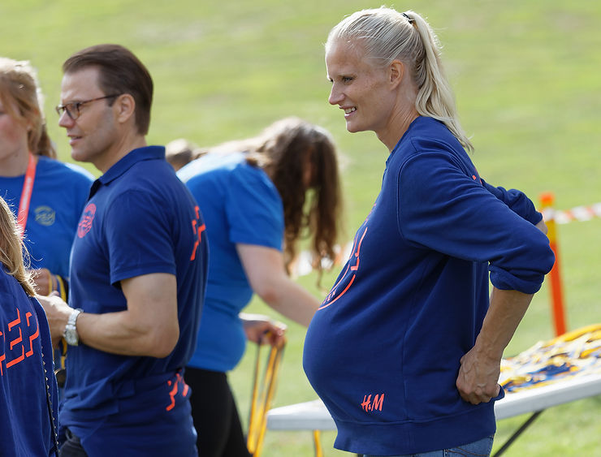
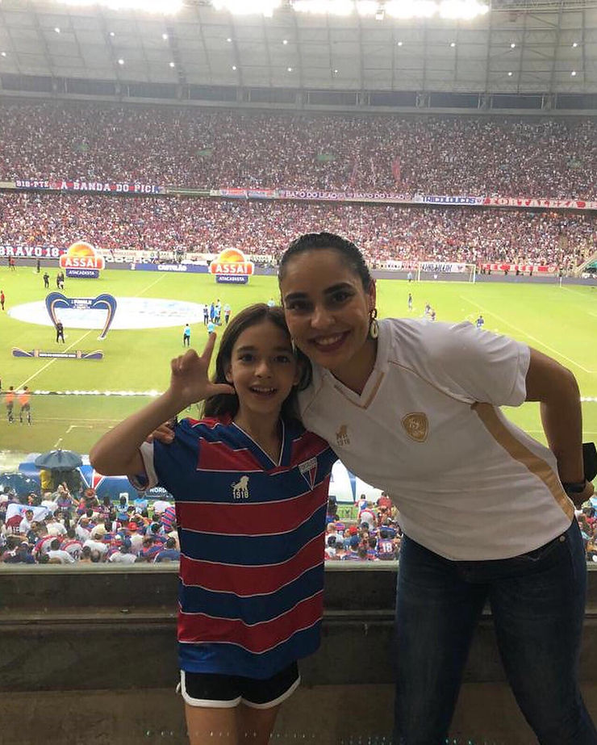

Dia das Mães, um dia a ser comemorado por todos nós! Mas também fomenta nossa curiosidade: como é a maternidade entre as atletas de alto rendimento. Para conversar sobre o tema, a Prof. Dra. Lívia Viana, psicóloga do esporte, professora do curso de Educação Física da Universidade Federal do Ceará, fala um pouco sobre os dados da sua pesquisa “Impactos da maternidade para atletas de alto rendimento” desenvolvida pela Iniciação Científica.

ABRAPESP – Lívia, o que motivou trabalhar esse tema?
Livia – A maternidade para atletas de alto rendimento é um tema pouco abordado, porque, muitas vezes, a maternidade parece estar distante da rotina de uma atleta de alto rendimento. Além disso, engravidar implica muitas mudanças, tanto corporal como social e quando isso ocorre com as atletas, que tem o seu corpo seu meio de trabalho, algumas reflexões precisam ser realizadas.

ABRAPESP – Quais as principais implicações da maternidade para as atletas de alto rendimento?
Lívia – Aquelas atletas que planejam engravidar escolhem o período entre as suas principais competições. Se organizam financeiramente, buscam o apoio da família e/ou rede de apoio, inclusive quando retornam . Porque há um impacto na rotina de treinos, principalmente relacionada à escassez de sono de filhos pequenos.
Mas, nem sempre a resposta é negativa. Muitas revelam sentir-se emocionalmente mais fortes, mais maduras, passaram a ouvir mais seu corpo, aumentaram a concentração nos treinos e demonstram lidar melhor com as derrotas e as frustrações. Muito comum adiar a gravidez para depois da aposentadoria.
ABRAPESP – Como é a relação das atletas e contrato?
Lívia – No Brasil nenhuma atleta é contratada, a receita vem dos patrocínios. Mas também é importante lembrar que a inserção da mulher no esporte é relativamente recente. Quando permitida a participação da mulher, era autorizada por homens, só nas modalidades de baixo impacto, que não comprometesse o corpo e a possibilidade de reprodução. Hoje as mulheres participam de todas as modalidades, mas não são contratadas, e não usufruem de direitos trabalhistas como licença maternidade e salário garantido durante o afastamento.
Por fim, a decisão é sempre da atleta. Mas cabe ao psicólogo ajudar a ver estas alternativas. Este dilema também é das psicólogas do esporte, maioria mulheres, que trabalham com contratos emergenciais. Afinal a demanda do alto rendimento é imediata.
E sua experiência como mãe atleta? Um tema para olhar, estudar e pesquisar, não? Fica aqui os nossos parabéns para vocês mulheres fortes e que enfrentam tudo isso. Mães que seu dia seja especial e com a comemoração que você merece.